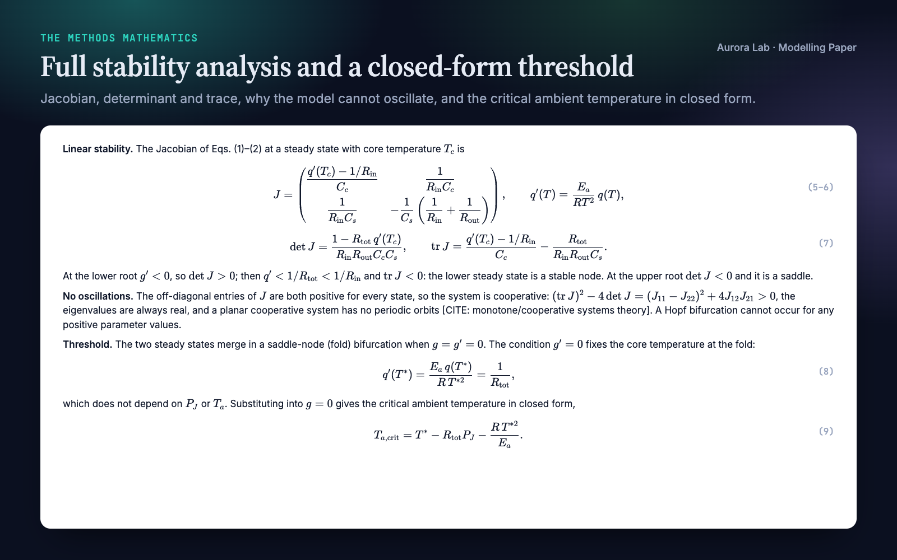
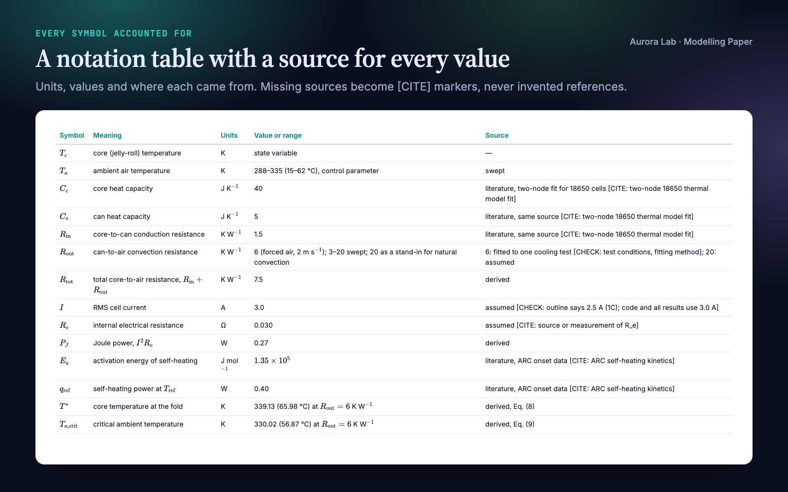
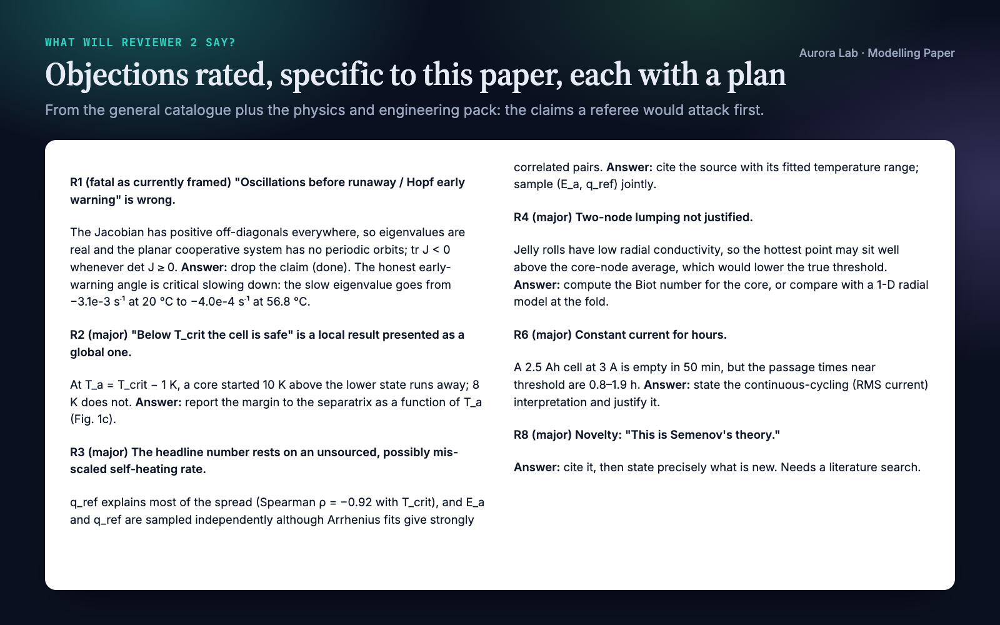
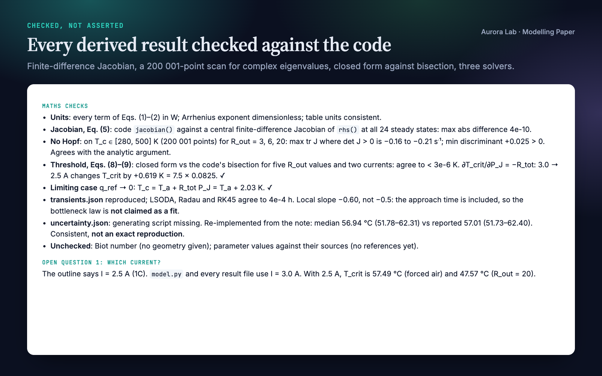
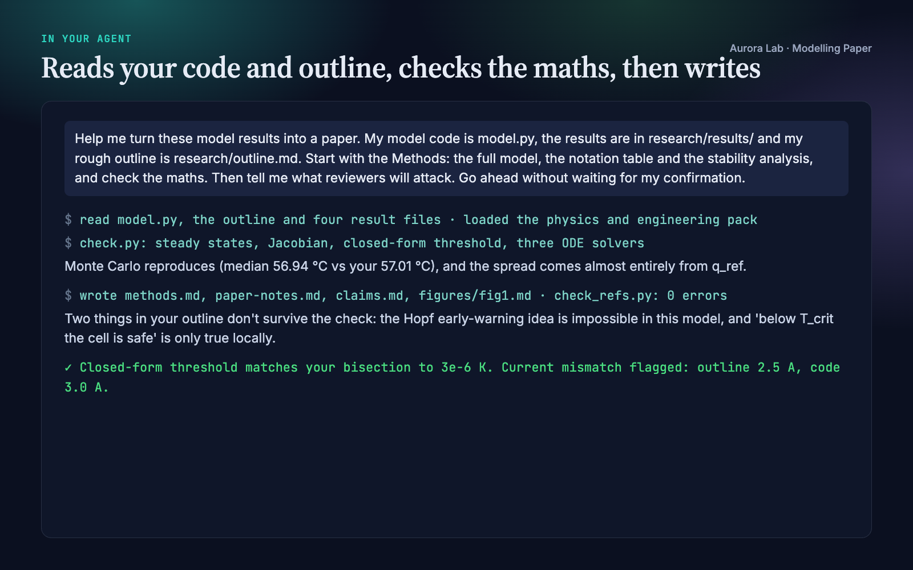

Overview
A modelling paper is judged on its mathematics. Is the model written out in full? Does every parameter have a source? Do the steady states, thresholds and distributions in the text actually hold? Does the paper claim more than the model shows? Modelling Paper makes your agent a co-author who handles all of that, in two roles:
- PI. Owns the story. Pins the one-sentence claim before anything is drafted, challenges weak framing, decides what goes where, and asks "what will Reviewer 2 say?" before anyone else does.
- Postdoc. Drafts full prose, writes the complete Methods mathematics, and checks it.
What you get:
- It starts from what you have. It reads your model code, results, outline and any partial draft before asking anything. The Methods describe what your code actually solves, and any difference between the code and your notes is reported to you.
- The full Methods mathematics. The complete model with every symbol defined, initial and boundary conditions, scaling, derived results with enough derivation to check, numerical settings, and a notation table: symbol, meaning, units, value or range, source.
- Checked, not asserted. Dimensions, limiting cases, your code against the equations, and a numerical check of every analytic result when a Python environment is available. Every number in the prose comes from a computation. A claim in your notes that the model cannot support is flagged before it is written up.
- Any model class, any field. A checklist per model class (deterministic ODEs, DDEs and PDEs; master equations and SDEs; agent-based models; statistical and inference models; networks; optimisation and control; numerical methods; surrogates). Domain packs add vocabulary, conventions and field-specific reviewer objections for biology, epidemiology, ecology, and physics and engineering.
- Reviewer objections, rated and planned. Each objection specific to your paper, rated fatal, major or minor, with the planned answer.
- No invented references. A citation is verified (seen in a search result, supplied by you, or read) or it is marked. A parameter without a known source gets a
[CITE]marker, never a plausible-looking citation.
Other Aurora Lab skills for the same paper: Claim Check (does each sentence stay inside its evidence?), Scientific Voice (how the sentences read) and Journal House Style (fit the venue's guidelines) pair well with it. Each works on its own.
Quick start
- Get the skill from Agensi and add it to your agent (Claude Code, Codex CLI, Cursor, Gemini CLI or any agent that loads SKILL.md skills).
- Open your agent in the project, ideally with your model's own environment available (for example Python with numpy and scipy) so the agent can check the maths numerically.
- Optional: Python 3.10+ for the two helper scripts (standard library only).
- Ask in plain words.
Example requests:
- "Help me turn these model results into a paper. Start with the Methods."
- "I have an SEIR model fitted to case data with a school-closure scenario. Is this a paper? Where do I start?"
- "Write the Methods for my reaction-diffusion model, including the dispersion relation and the mesh study."
- "Here are my agent-based simulation results. Draft Results and list what reviewers will attack."
- "Methods paper or application paper? Our new solver is five times faster on these benchmarks."
What you get
Everything below comes from a real run: a fresh agent session with only this skill installed, given the request shown ($1.07, 281 s). The project was ours and deliberately outside biology: a synthetic two-node thermal model of a cylindrical battery cell (core and can, Joule heating, Arrhenius self-heating, convective cooling), its Python code, four result files and a rough outline. We planted three problems in the outline: a hoped-for Hopf bifurcation, "below the threshold the cell is safe", and a current of 2.5 A where the code uses 3.0 A.
The agent caught all three. It proved that the system is cooperative, so its eigenvalues are always real and a Hopf bifurcation cannot occur, and offered critical slowing down as the early-warning signal the model does support. It showed that the safe state is only locally stable (a core started 10 K hot runs away 1 K below the threshold). It derived the threshold in closed form, matched the code's bisection to 3e-6 K, and reported the threshold at both currents. It also raised points we had not planned: a 2.5 Ah cell at 3 A is empty in 50 minutes, yet the runaway times are hours, and the self-heating rate drives most of the uncertainty. It invented no references: the user's notes named no sources, so the bibliography stayed empty and every literature value carries a [CITE] marker. We re-derived the Methods and recomputed every number on these cards ourselves. One earlier run (not shown) stated a hand-computed temperature 0.4 K off; the skill now requires every number in the prose to come from a computation, and the run shown here did so.





How it works
- Find out where the paper stands. Read the existing files (outline, notes, sections, claims, bibliography, results, figure plans and the model code), then route: a raw idea goes to the PI first, results get framed into a story, a partial draft gets its narrative arc assessed, a single section gets written with a skeleton around it.
- Pin the claim. One sentence at the top of the outline before the first paragraph is drafted.
- Identify the model class and the field. Load the class checklist and, if one fits, the domain pack.
- Write the Methods mathematics. The model, notation table, scaling, derived results, numerics and any inference, using the per-class checklist.
- Verify. Dimensions, signs, limiting cases, code against equations, analytic results against numerical ones, the user's claims against the maths, and every number in the prose recomputed. What was checked, how, and what was not checked goes into the notes.
- Draft the other sections around the planned figures, keeping the wording no stronger than the claims list.
- Anticipate reviewers. A running, rated objection list with a planned answer for each.
- Cite carefully, then export. Verified references only; the citation audit runs before any LaTeX export.
Files it reads and writes
| Path | |
|---|---|
| Reads | your model code, research/results/*.json, and any existing research/outline.md, paper-notes.md, paper/*, claims.md, refs.bib, figures/*.md |
| Writes | manuscript sections in research/paper/ (nothing else goes there), the working files research/outline.md and research/paper-notes.md, new figure plans research/figures/figN.md, its own lines in research/claims.md, entries in research/refs.bib |
| Runs | the two helper scripts, and throwaway scripts that check the maths in your environment (kept in the system temp directory unless you ask) |
| Never | edits your code, data or result files; invents a reference or a parameter source; uses the network from its scripts |
Without a research/ folder it works where you point it: the sections go in your paper folder and the two working files beside it. Projects from the older layout, with outline.md and notes.md inside paper/, keep working.
Helper scripts
python scaffold_paper.py research --title "Working title" # paper skeleton, never overwrites
python check_refs.py research # citation audit
python check_refs.py research --strict # before submission
Both ship in the skill's scripts/ folder. Python 3.10+, standard library only, no network.
| Script | What it does |
|---|---|
scaffold_paper.py |
Creates the section files, the outline and notes files, the figures folder, claims.md and refs.bib with starter templates. Skips every file that already exists. |
check_refs.py |
Lists cited keys missing from refs.bib (error), cited keys marked UNVERIFIED, [CITE: ...] and [CHECK: ...] placeholders, and entries never cited. Reads Pandoc and LaTeX citation syntax. Exit code 1 on errors, or on any warning with --strict. |
FAQ
Which kinds of models does it handle?
Any paper whose contribution rests on a mathematical or computational model: deterministic ODEs, DDEs and PDEs, master equations and SDEs, agent-based models, statistical and inference models, network models, optimisation and control, numerical-methods papers and surrogate models. Each class has a checklist of what its Methods must contain.
My field isn't biology. Will it work?
Yes. The core is field-neutral, and the demo above is an engineering model. Domain packs add vocabulary and field-specific reviewer objections for biology, epidemiology, ecology, and physics and engineering. For other fields, such as economics, climate or neuroscience, it works from the core and asks you which conventions and reporting standards your community expects.
Does it actually check the maths?
Checking is part of the workflow, not an afterthought: units, limiting cases, your code against the written equations, and a numerical check of every analytic steady state, threshold or distribution when a Python environment is available. The notes record what was checked, how, and what could not be checked. It is a careful review, not a formal proof.
Will it make up references?
No. A reference is cited only if the agent saw it in a search result with a DOI or stable identifier, you supplied it, or it read the paper. Anything else is marked UNVERIFIED or left as a [CITE: what is needed] placeholder, and check_refs.py lists them all before export.
Does it write the whole paper or just the Methods?
Both. It drafts every section, the abstract last, and starts wherever you ask. The demo asked for the Methods and the reviewer objections first.
How is it different from Claim Check?
Modelling Paper co-writes the paper and its mathematics. Claim Check audits finished prose sentence by sentence against the evidence. They pair well, and neither needs the other.
Limitations
- It writes and checks the paper; it does not run your study. Numerical checks need a working environment for your model; without one the agent checks by hand and lists what it could not verify.
- Its checks are a careful review, not a formal proof of correctness.
- Without a literature-search tool or your own PDFs and BibTeX, references stay as
[CITE]placeholders for you to fill. - Domain packs cover biology, epidemiology, ecology, and physics and engineering. Other fields get the general core.
- It plans figures and writes captions but does not produce figures, format for a specific journal or edit sentence-level style. Markdown is the working format; LaTeX export is a separate step on request.
Changelog
1.0.0 · October 2026 · First release: PI and postdoc roles, Methods mathematics by model class with a verification pass, domain packs for biology, epidemiology, ecology, and physics and engineering, a general reviewer-objection catalogue, verified-only citations, and the scaffold and citation-audit scripts.